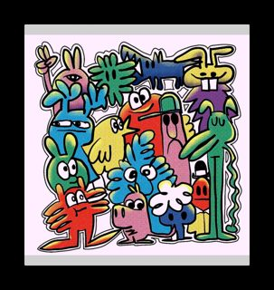
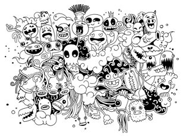
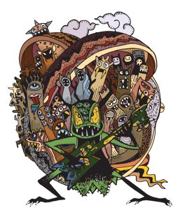

4 works · 10 files saved. Each work has one or more saved files: the image or video, and the metadata record. To repoint a token is to change the address the token itself reports, so that it names the saved copy on IPFS; each work says who could do that.
https://api.opensea.io/api/v1/metadata/0x495f947276749Ce646f68AC8c2484… (served by api.opensea.io, not on IPFS)bafybeih437i2b… gateway.pinata.cloud · ipfs.io · dweb.link — original host, 2026-09-20bafybeiaqdcgwt… gateway.pinata.cloud · ipfs.io · dweb.link — original host, 2026-09-22, 1000×1026bafkreihuyugvq… gateway.pinata.cloud · ipfs.io · dweb.link — original host, 2026-09-21
https://api.opensea.io/api/v1/metadata/0x495f947276749Ce646f68AC8c2484… (served by api.opensea.io, not on IPFS)bafybeigthi376… gateway.pinata.cloud · ipfs.io · dweb.link — original host, 2026-09-22bafybeid63flmx… gateway.pinata.cloud · ipfs.io · dweb.link — original host, 2026-09-20, 2648×2800bafkreibbtvuws… gateway.pinata.cloud · ipfs.io · dweb.link — original host, 2026-09-21
https://api.opensea.io/api/v1/metadata/0x495f947276749Ce646f68AC8c2484… (served by api.opensea.io, not on IPFS)bafybeiazuz7o6… gateway.pinata.cloud · ipfs.io · dweb.link — original host, 2026-09-20, 5000×3600bafkreibt2m2kr… gateway.pinata.cloud · ipfs.io · dweb.link — original host, 2026-09-21
https://api.opensea.io/api/v1/metadata/0x495f947276749Ce646f68AC8c2484… (served by api.opensea.io, not on IPFS)bafybeigi7shc3… gateway.pinata.cloud · ipfs.io · dweb.link — original host, 2026-09-22, 3989×5017bafkreiee3z7he… gateway.pinata.cloud · ipfs.io · dweb.link — original host, 2026-09-21Generated archive pages. Content identifiers point to the public IPFS network.